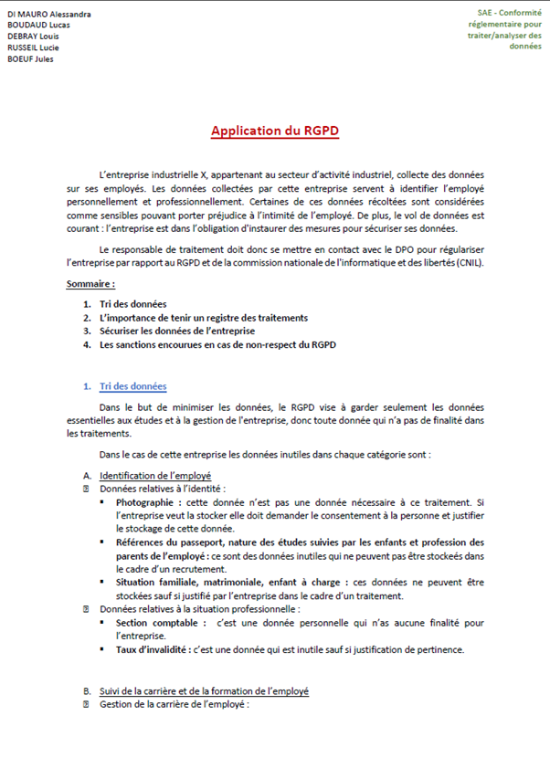
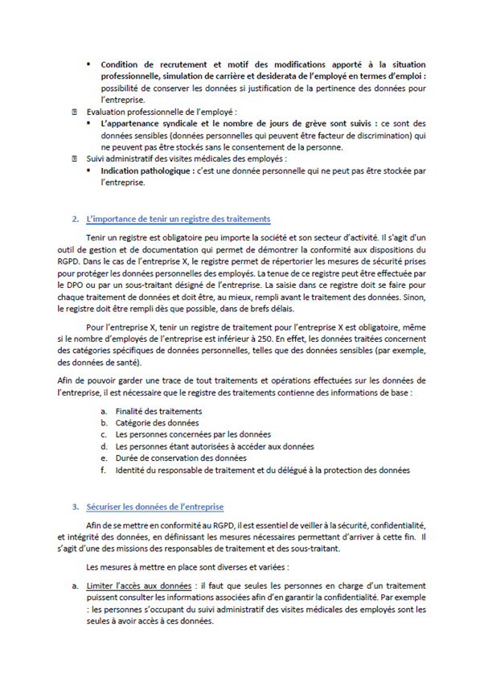

GDPR
This group project was done as part of a course teaching us the concept of data protection with the GDPR. The General Data Protection Regulation (GDPR), adopted by the EU in 2016, protects data of individuals by giving certain institutions the power to give fines to the compagnies that do not comply with the rules for collecting and handling sensitive data.
Our task was to pretend to be a data protection officer at a company that works with sensitive data. By studying the data and how the company collected it, we had to write a report explaining to the company how to keep operating while following GDPR rules, in order to avoid being fined by the CNIL (the French data protection authority).
Skills learned:
- Legal knowledge of data protection principles, along with their issues and consequences
- Understanding the practices to use when collecting data
- Awareness of ways to secure a company's sensitive data
- As a citizen, understanding how to claim my rights to protect my personal data
Illustrations


Overview of the report